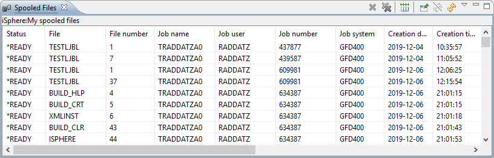
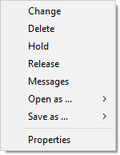

Use the iSphere Spooled Files view to view and manage the spooled files on an IBM i server.
Use the context menu of an iSphere spooled file filter to open the view with the Work With Spooled Files option.

The content of the view may be refreshed manually, or the display may be set to refresh automatically after a specified interval between 10 seconds and 15 minutes.
Use the context menu (right click) of a spooled file to perform actions on it:

The available options are:
| Change | - | Use this option to run the Change Spooled File Attributes (CHGSPLFA) command to change the attributes of the spooled file. |
| Delete | - | Use this option to delete the specified spooled file. |
| Hold | - | Use this option to hold the spooled file. |
| Release | - | Use this option to release the specified spooled file from a hold status. |
| Messages | - | Specifies the user data of the spooled file. |
| Open as | - | Use this option to open the spooled file in Text, HTML or PDF format. |
| Save as | - | Use this option to save the spooled file in Text, HTML or PDF format. |
| Properties | - | Use this option to display the properties of the spooled file. |
The Open as... and Save as... menu options let you select the format in which to open or save the spooled file: